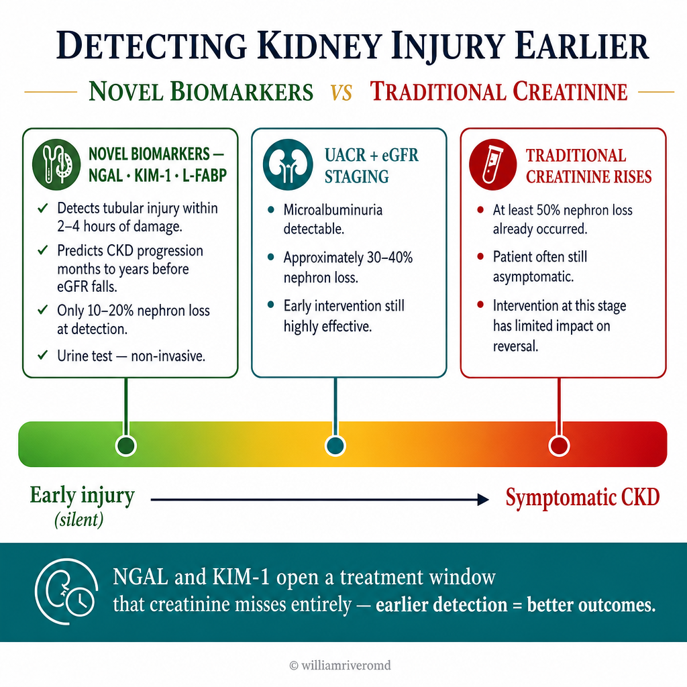
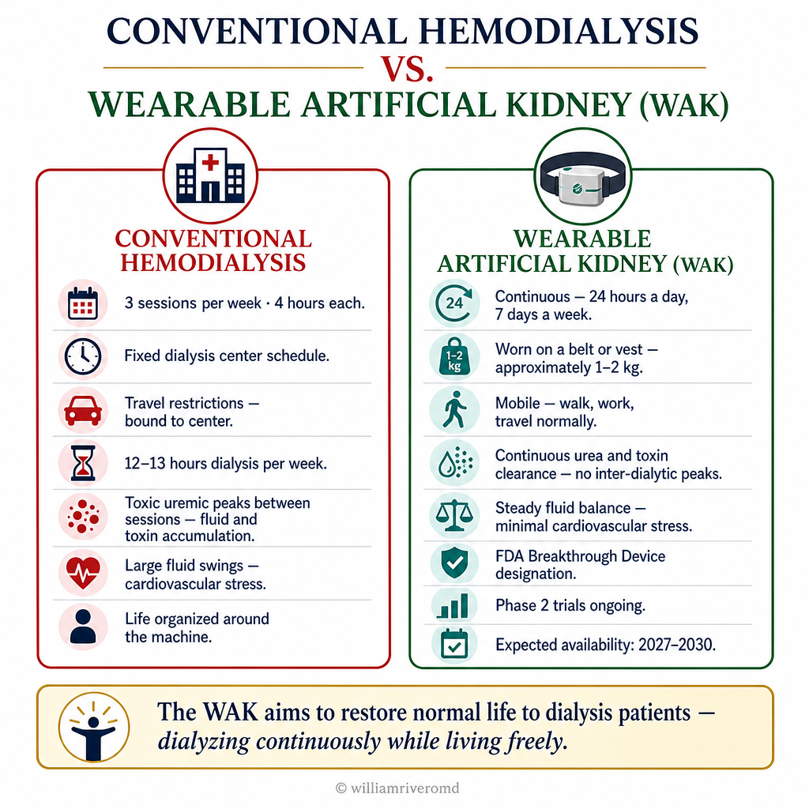
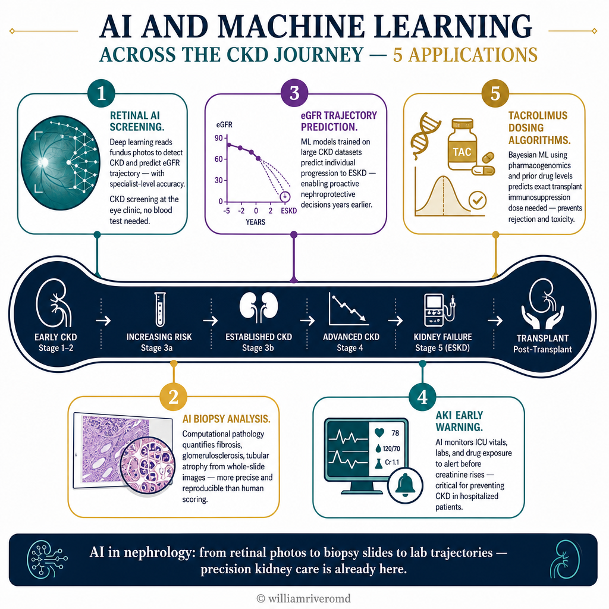

Earlier and More Precise Kidney Disease DetectionMas Maaga at Mas Tumpak na Pagtuklas ng Sakit sa BatoMas Sayo ug Mas Tumpak nga Pagtuklas sa Sakit sa Kidney
The biggest challenge in CKD is that symptoms appear late — by the time patients feel unwell, 60–70% of kidney function is already lost. New diagnostic technologies aim to detect kidney injury earlier, predict progression more accurately, and guide treatment more precisely than creatinine and eGFR alone.Ang pinakamalaking hamon sa CKD ay ang mga sintomas ay lumalabas nang huli — sa oras na maramdam ng mga pasyente ang pagiging may sakit, 60–70% ng function ng bato ay nawala na. Ang mga bagong teknolohiya sa diagnostic ay naglalayong matuklas ang pinsala sa bato nang mas maaga, hulaan ang pagsulong nang mas tumpak, at gabayan ang paggamot nang mas malinaw kaysa sa creatinine at eGFR lamang.Ang pinakadakilang hagit sa CKD mao nga ang mga sintomas nagpakita nang ulahi — sa panahon nga maramdaman sa mga pasyente nga may sakit, 60–70% sa function sa kidney nawala na. Ang mga bag-ong teknolohiya sa diagnostic nagtumong sa pagtuklas sa pinsala sa kidney nang mas sayo, paghula sa pagsulong nang mas tumpak, ug paggiya sa pagtambal nang mas malinaw kaysa sa creatinine ug eGFR lamang.

NGAL, KIM-1, and LFABP are urinary biomarkers of tubular injury that rise within hours of acute injury and predict CKD progression months to years before eGFR begins to fall.Ang NGAL, KIM-1, at LFABP ay mga urinary biomarker ng tubular injury na tumataas sa loob ng ilang oras pagkatapos ng acute injury at hinuhulaan ang pagsulong ng CKD nang ilang buwan hanggang taon bago magsimulang bumaba ang eGFR.Ang NGAL, KIM-1, ug LFABP mga urinary biomarker sa tubular injury nga motubo sulod sa pipila ka oras human sa acute injury ug naghulagway sa pagsulong sa CKD nang pipila ka bulan hangtod tuig sa wala pa magsugod pagkahulog ang eGFR.
Novel Kidney Biomarkers — NGAL, KIM-1, L-FABPMga Bagong Biomarker ng Bato — NGAL, KIM-1, L-FABPMga Bag-ong Biomarker sa Kidney — NGAL, KIM-1, L-FABP
Neutrophil Gelatinase-Associated Lipocalin (NGAL) and Kidney Injury Molecule-1 (KIM-1) are urinary biomarkers of tubular injury. They rise within 2–4 hours of acute kidney injury (AKI) — compared to creatinine which takes 24–48 hours. In CKD, elevated urinary KIM-1 predicts faster progression to ESKD independently of eGFR and proteinuria. NGAL is increasingly used in ICU settings and post-cardiac surgery to guide early AKI management.Ang Neutrophil Gelatinase-Associated Lipocalin (NGAL) at Kidney Injury Molecule-1 (KIM-1) ay mga urinary biomarker ng tubular injury. Tumataas ang mga ito sa loob ng 2–4 oras ng acute kidney injury (AKI) — kumpara sa creatinine na tumatagal ng 24–48 oras. Sa CKD, ang mataas na urinary KIM-1 ay hinuhulaan ang mas mabilis na pagsulong sa ESKD nang independyente sa eGFR at proteinuria. Ang NGAL ay lalong ginagamit sa mga ICU setting at pagkatapos ng cardiac surgery upang gabayan ang maagang pamamahala ng AKI.Ang Neutrophil Gelatinase-Associated Lipocalin (NGAL) ug Kidney Injury Molecule-1 (KIM-1) mga urinary biomarker sa tubular injury. Motubo sulod sa 2–4 ka oras sa acute kidney injury (AKI) — kumpara sa creatinine nga nagkinahanglan og 24–48 ka oras. Sa CKD, ang taas nga urinary KIM-1 naghulagway sa mas paspas nga pagsulong sa ESKD nga independyente sa eGFR ug proteinuria. Ang NGAL lalong gigamit sa mga ICU setting ug human sa cardiac surgery aron giyahan ang sayo nga pagdumala sa AKI.
Urinary Exosomes and MicroRNA ProfilingUrinary Exosomes at MicroRNA ProfilingUrinary Exosomes ug MicroRNA Profiling
Urinary exosomes are nano-sized vesicles released by renal tubular and glomerular cells — carrying microRNAs, proteins, and lipids that reflect ongoing cellular stress. Specific exosomal miRNA signatures can distinguish IgA nephropathy from lupus nephritis, predict response to treatment, and identify patients likely to progress to ESKD — all from a simple urine sample without biopsy.Ang mga urinary exosome ay mga vesicle na may nano-sukat na inilalabas ng mga renal tubular at glomerular cells — nagdadala ng mga microRNA, protina, at lipid na sumasalamin sa patuloy na cellular stress. Ang mga tiyak na exosomal miRNA signature ay maaaring makilala ang IgA nephropathy mula sa lupus nephritis, hulaan ang tugon sa paggamot, at tukuyin ang mga pasyenteng malamang na mag-progress sa ESKD — lahat mula sa simpleng sample ng ihi nang walang biopsy.Ang mga urinary exosome mga nano-sukat nga vesicle nga gipagawas sa mga renal tubular ug glomerular cells — nagdala sa mga microRNA, protina, ug lipid nga nagpakita sa padayon nga cellular stress. Ang mga tiyak nga exosomal miRNA signature mahimong makilala ang IgA nephropathy gikan sa lupus nephritis, paghula sa tubag sa pagtambal, ug pagtukoy sa mga pasyente nga lagmit moprogress sa ESKD — tanan gikan sa simple nga sample sa ihi nga walay biopsy.
Liquid Biopsy — Cell-Free DNA and Donor-Derived cfDNALiquid Biopsy — Cell-Free DNA at Donor-Derived cfDNALiquid Biopsy — Cell-Free DNA ug Donor-Derived cfDNA
In kidney transplant recipients, donor-derived cell-free DNA (dd-cfDNA) in blood reflects kidney graft injury — rising before creatinine changes in subclinical rejection. The Prospera test (Natera) is FDA-cleared for transplant monitoring. In CKD, plasma cell-free DNA methylation patterns can now identify the cell type and kidney compartment undergoing injury — providing virtual biopsy data without a needle.Sa mga tatanggap ng kidney transplant, ang donor-derived cell-free DNA (dd-cfDNA) sa dugo ay sumasalamin sa pinsala ng kidney graft — tumataas bago magbago ang creatinine sa subclinical rejection. Ang Prospera test (Natera) ay FDA-cleared para sa transplant monitoring. Sa CKD, ang mga pattern ng methylation ng plasma cell-free DNA ay maaari nang tukuyin ang uri ng cell at kidney compartment na nagdadanas ng pinsala — nagbibigay ng virtual biopsy data nang walang karayom.Sa mga nagdawat sa kidney transplant, ang donor-derived cell-free DNA (dd-cfDNA) sa dugo nagpakita sa pinsala sa kidney graft — motubo sa wala pa magbag-o ang creatinine sa subclinical rejection. Ang Prospera test (Natera) FDA-cleared alang sa transplant monitoring. Sa CKD, ang mga pattern sa methylation sa plasma cell-free DNA karon makatukoy sa klase sa cell ug kidney compartment nga nagkasinati og pinsala — naghatag sa virtual biopsy data nga walay dagom.
The Wearable Artificial Kidney (WAK)Ang Naisusuot na Artipisyal na Bato (WAK)Ang Maisul-ob nga Artipisyal nga Kidney (WAK)

The WAK aims to replicate the kidney's continuous function — eliminating the toxic peaks of the inter-dialytic period and restoring freedom of movement to dialysis patients.Ang WAK ay naglalayong gayahin ang patuloy na function ng bato — inaalis ang mga toxic peak ng inter-dialytic na panahon at ibinabalik ang kalayaan ng kilusan sa mga pasyenteng may diyalisis.Ang WAK nagtumong sa paggaya sa padayon nga function sa kidney — gipapas ang mga toxic peak sa inter-dialytic nga panahon ug gibalik ang kagawasan sa paglihok sa mga pasyente nga adunay diyalisis.
Wearable Artificial Kidney — UCSF / Vanderbilt PrototypesNaisusuot na Artipisyal na Bato — Mga Prototype ng UCSF / VanderbiltMaisul-ob nga Artipisyal nga Kidney — Mga Prototype sa UCSF / Vanderbilt
The WAK is a battery-powered, belt-worn dialysis device (~1–2 kg) that performs continuous hemofiltration using a miniaturized sorbent cartridge and nano-filtration membrane. Patients wear it during waking hours — moving, working, and living normally while being dialyzed continuously. Early human trials showed adequate urea clearance with no major adverse events. Key engineering challenges remain: sorbent regeneration, ultrafiltration control, and preventing membrane fouling over 12–24 hours of continuous use.Ang WAK ay isang dialysis device na pinapagana ng baterya at isinusuot sa sinturon (~1–2 kg) na nagsasagawa ng tuloy-tuloy na hemofiltration gamit ang isang miniaturized na sorbent cartridge at nano-filtration membrane. Isinusuot ito ng mga pasyente sa panahon ng pagigising — gumagalaw, nagtatrabaho, at namumuhay nang normal habang patuloy na nadi-dialysis. Ang mga maagang human trial ay nagpakita ng sapat na urea clearance nang walang mga pangunahing masamang kaganapan. Nananatiling mga pangunahing engineering challenge: sorbent regeneration, ultrafiltration control, at pag-iwas sa membrane fouling sa loob ng 12–24 oras ng tuluy-tuloy na paggamit.Ang WAK usa ka dialysis device nga gipaandar sa baterya ug gisul-ob sa sinturon (~1–2 kg) nga nagbuhat sa padayon nga hemofiltration gamit ang miniaturized nga sorbent cartridge ug nano-filtration membrane. Gisul-ob kini sa mga pasyente sa panahon sa paggimata — naglihok, nagtrabaho, ug nagpuyo nang normal samtang padayon nga gi-dialysis. Ang mga sayo nga human trial nagpakita sa igo nga urea clearance nga walay mga pangunahing masamang panghitabo. Nagpabilin nga mga pangunahing engineering challenge: sorbent regeneration, ultrafiltration control, ug pag-iwas sa membrane fouling sulod sa 12–24 ka oras sa padayon nga paggamit.
The Implantable Bioartificial Kidney (iBAK)Ang Implantable Bioartificial Kidney (iBAK)Ang Implantable Bioartificial Kidney (iBAK)
Kidney Project — UCSF / VanderbiltKidney Project — UCSF / VanderbiltKidney Project — UCSF / Vanderbilt
The iBAK combines two components: a silicon nanopore hemofiltration membrane (filters blood like a glomerulus) seeded with living human tubular cells (reabsorb water, electrolytes, and nutrients like a real tubule). Powered entirely by blood pressure — no battery required. The silicon membrane has pore sizes of 6–11 nm — selectively permeable to small molecules while blocking blood cells, proteins, and bacteria. The device is designed to be implanted like a kidney transplant — connected to iliac vessels — but without the need for immunosuppression because the tubular cells are enclosed behind an immunoprotective membrane.Pinagsama ng iBAK ang dalawang bahagi: isang silicon nanopore hemofiltration membrane (nag-filter ng dugo tulad ng glomerulus) na may mga buhay na human tubular cells (nag-reabsorb ng tubig, electrolyte, at sustansya tulad ng tunay na tubule). Pinapatakbo nang buo ng presyon ng dugo — walang baterya na kailangan. Ang silicon membrane ay may sukat ng pore na 6–11 nm — selectively permeable sa maliliit na molekula habang hinaharang ang mga blood cell, protina, at bakterya. Ang device ay idinisenyo upang ma-implant tulad ng kidney transplant — konektado sa mga iliac vessel — ngunit nang hindi nangangailangan ng immunosuppression dahil ang mga tubular cell ay nakapaloob sa likod ng isang immunoprotective membrane.Gihiusa sa iBAK ang duha ka sangkap: usa ka silicon nanopore hemofiltration membrane (nag-filter sa dugo sama sa glomerulus) nga adunay mga buhi nga human tubular cells (nag-reabsorb sa tubig, electrolyte, ug sustansya sama sa tinuod nga tubule). Gipaandar nang tibuok sa presyon sa dugo — walay baterya nga kinahanglan. Ang silicon membrane adunay sukat sa pore nga 6–11 nm — selectively permeable sa gagmay nga molekula samtang nagbabag sa mga blood cell, protina, ug bakterya. Ang device gilaraw aron ma-implant sama sa kidney transplant — konektado sa mga iliac vessel — apan nga walay panginahanglan sa immunosuppression tungod kay ang mga tubular cell nakapalibot sa luyo sa usa ka immunoprotective membrane.
Remote Patient Monitoring in CKDRemote Patient Monitoring sa CKDRemote Patient Monitoring sa CKD
Continuous BP monitoringTuluy-tuloy na monitoring ng BPPadayon nga monitoring sa BP
Cuffless wearable blood pressure monitors (Samsung Galaxy Watch, Omron HeartGuide, Valencell patch) now provide continuous ambulatory BP data — far more informative than office measurements. Detecting nocturnal hypertension and BP variability — both major CKD progression drivers — becomes possible. Home BP telemetry to the clinic enables proactive medication adjustment without waiting for the next visit.Ang mga cuffless wearable blood pressure monitor (Samsung Galaxy Watch, Omron HeartGuide, Valencell patch) ay nagbibigay na ngayon ng tuluy-tuloy na ambulatory BP data — mas kapaki-pakinabang kaysa sa mga pagsukat sa opisina. Ang pagtuklas ng nocturnal hypertension at BP variability — parehong pangunahing driver ng pagsulong ng CKD — ay nagiging posible. Ang home BP telemetry sa klinika ay nagbibigay-daan sa proactive na pag-aayos ng gamot nang hindi naghihintay sa susunod na pagbisita.Ang mga cuffless wearable blood pressure monitor (Samsung Galaxy Watch, Omron HeartGuide, Valencell patch) karon naghatag og padayon nga ambulatory BP data — labi pang mapuslanon kaysa sa mga sukdon sa opisina. Ang pagtuklas sa nocturnal hypertension ug BP variability — pareho nga pangunahing driver sa pagsulong sa CKD — nahimong posible. Ang home BP telemetry sa klinika nagtugot sa proactive nga pagsaayos sa tambal nga walay paghulat sa sunod nga pagbisita.
Implantable fluid sensorsMga implantable fluid sensorMga implantable fluid sensor
The CardioMEMS HN device (implanted in the pulmonary artery) provides daily filling pressure data that predicts fluid overload in heart failure patients with CKD 72 hours before clinical decompensation — allowing preemptive diuretic adjustment. Reduces HF hospitalizations by 57% in trials. Relevant for the large population of CKD + HF patients managed in nephrology practice.Ang CardioMEMS HN device (naka-implant sa pulmonary artery) ay nagbibigay ng pang-araw-araw na data ng filling pressure na hinuhulaan ang fluid overload sa mga pasyenteng may heart failure na may CKD 72 oras bago ang clinical decompensation — nagbibigay-daan sa preemptive na pag-aayos ng diuretic. Binabawasan ang mga HF hospitalization ng 57% sa mga trial. Nauugnay sa malaking populasyon ng mga pasyenteng CKD + HF na pinamamahalaan sa nephrology practice.Ang CardioMEMS HN device (gi-implant sa pulmonary artery) naghatag og adlaw-adlaw nga data sa filling pressure nga naghulagway sa fluid overload sa mga pasyente nga adunay heart failure nga adunay CKD 72 ka oras sa wala pa ang clinical decompensation — nagtugot sa preemptive nga pagsaayos sa diuretic. Nagpaminus sa mga HF hospitalization og 57% sa mga trial. Relevante alang sa dako nga populasyon sa mga pasyente nga CKD + HF nga gidumala sa nephrology practice.
SeriousMD and telemedicine platformsSeriousMD at mga telemedicine platformSeriousMD ug mga telemedicine platform
Online consultation platforms (SeriousMD, KonsultaMD) have made specialist nephrology access available to patients in provinces who previously had no practical access. Particularly valuable for monitoring CKD progression between visits with uploaded home BP logs and lab results — enabling more frequent, low-burden follow-up that protects kidneys long-term.Ang mga online consultation platform (SeriousMD, KonsultaMD) ay gawing available ang specialist nephrology access para sa mga pasyente sa mga probinsya na dating walang praktikal na access. Partikular na mahalaga para sa monitoring ng pagsulong ng CKD sa pagitan ng mga pagbisita na may na-upload na home BP log at mga resulta ng lab — nagbibigay-daan sa mas madalas, mababang-pasanin na follow-up na nagpoprotekta sa mga bato sa matagal na panahon.Ang mga online consultation platform (SeriousMD, KonsultaMD) naghimo sa specialist nephrology access nga available alang sa mga pasyente sa mga probinsya nga kaniadto walay praktikal nga access. Partikular nga bililhon alang sa monitoring sa pagsulong sa CKD sa taliwala sa mga pagbisita uban ang gi-upload nga home BP log ug mga resulta sa lab — nagtugot sa mas kanunay, ubos-pasanin nga follow-up nga nagprotekta sa mga kidney sa dugay nga panahon.
Home self-testingHome self-testingHome self-testing
Urine albumin dipstick tests (Alere, Roche) usable at home by patients. Smartphone-based urine test strip readers (e.g., Vivachek, Diagnox) can transmit UACR results directly to the physician's app. In diabetic CKD patients, monthly home UACR monitoring detects early albuminuria flares that would otherwise be missed between quarterly clinic visits.Ang mga urine albumin dipstick test (Alere, Roche) ay magagamit sa bahay ng mga pasyente. Ang mga smartphone-based urine test strip reader (hal., Vivachek, Diagnox) ay maaaring magpadala ng mga resulta ng UACR nang direkta sa app ng doktor. Sa mga pasyenteng may diabetic CKD, ang buwanang home UACR monitoring ay nakakakita ng mga maagang albuminuria flare na kung hindi ay mapapalampas sa pagitan ng mga quarterly na pagbisita sa klinika.Ang mga urine albumin dipstick test (Alere, Roche) magagamit sa balay sa mga pasyente. Ang mga smartphone-based urine test strip reader (hal., Vivachek, Diagnox) mahimong magpadala sa mga resulta sa UACR nang direkta sa app sa doktor. Sa mga pasyente nga adunay diabetic CKD, ang buwanang home UACR monitoring nakatuklas sa mga sayo nga albuminuria flare nga kung dili mapalaktawan tali sa mga quarterly nga pagbisita sa klinika.
AI and Machine Learning in NephrologyAI at Machine Learning sa NefrolohiyaAI ug Machine Learning sa Nefrolohiya

Machine learning models trained on large CKD datasets can predict individual eGFR trajectories, AKI risk, dialysis timing, and optimal drug dosing — enabling precision nephrology.Ang mga machine learning model na sinanay sa malalaking CKD dataset ay maaaring hulaan ang mga indibidwal na trajectory ng eGFR, panganib sa AKI, timing ng diyalisis, at pinakamainam na dosis ng gamot — nagbibigay-daan sa precision nephrology.Ang mga machine learning model nga gi-train sa dako nga mga CKD dataset mahimong makatagna sa mga indibidwal nga trajectory sa eGFR, peligro sa AKI, timing sa diyalisis, ug pinakamayad nga dosis sa tambal — nagtugot sa precision nephrology.
Retinal AI for CKD detectionRetinal AI para sa pagtuklas ng CKDRetinal AI alang sa pagtuklas sa CKD
Deep learning analysis of retinal fundus photographs detects diabetic nephropathy and predicts eGFR trajectory with accuracy matching specialist nephrologists — opening the possibility of CKD screening at routine eye examinations without blood or urine tests.Ang deep learning analysis ng mga retinal fundus photograph ay nakakakita ng diabetic nephropathy at hinuhulaan ang trajectory ng eGFR na may katumpakang katumbas ng mga espesyalistang nefrologo — binubuksan ang posibilidad ng CKD screening sa mga regular na pagsusuri sa mata nang walang pagsusuri sa dugo o ihi.Ang deep learning analysis sa mga retinal fundus photograph nakatuklas sa diabetic nephropathy ug nagtagna sa trajectory sa eGFR nga adunay katukma nga katumbas sa mga espesyalista nga nefrologo — nagbukas sa posibilidad sa CKD screening sa mga rutinang pagsusuri sa mata nga walay pagsusuri sa dugo o ihi.
AI kidney biopsy analysisAI na pagsusuri ng kidney biopsyAI nga pagsusuri sa kidney biopsy
Computational pathology platforms (Visiopharm, Aiforia) analyze kidney biopsy whole-slide images to quantify fibrosis, tubular atrophy, glomerulosclerosis, and immune infiltrate — providing more reproducible and granular data than standard light microscopy scoring by pathologists.Ang mga computational pathology platform (Visiopharm, Aiforia) ay nagsusuri ng mga whole-slide image ng kidney biopsy upang sukatin ang fibrosis, tubular atrophy, glomerulosclerosis, at immune infiltrate — nagbibigay ng mas reproducible at mas detalyadong data kaysa sa karaniwang light microscopy scoring ng mga pathologist.Ang mga computational pathology platform (Visiopharm, Aiforia) nagsusuri sa mga whole-slide image sa kidney biopsy aron sukdon ang fibrosis, tubular atrophy, glomerulosclerosis, ug immune infiltrate — naghatag og mas reproducible ug mas detalyado nga data kaysa sa standard nga light microscopy scoring sa mga pathologist.
Tacrolimus dosing algorithmsMga algorithm ng dosis ng tacrolimusMga algorithm sa dosis sa tacrolimus
Bayesian and machine learning algorithms using patient demographics, pharmacogenomics (CYP3A5 genotype), and prior tacrolimus levels can predict the dose needed to achieve target trough levels — reducing over/under-immunosuppression in transplant recipients during the high-risk early post-transplant period.Ang mga Bayesian at machine learning algorithm na gumagamit ng demografya ng pasyente, pharmacogenomics (CYP3A5 genotype), at nakaraang antas ng tacrolimus ay maaaring hulaan ang dosis na kailangan upang makamit ang target na trough level — binabawasan ang labis/kulang na immunosuppression sa mga tatanggap ng transplant sa mataas na panganib na maagang panahon pagkatapos ng transplant.Ang mga Bayesian ug machine learning algorithm nga naggamit sa demographics sa pasyente, pharmacogenomics (CYP3A5 genotype), ug nauna nga mga antas sa tacrolimus mahimong makatagna sa dosis nga gikinahanglan aron makab-ot ang target nga trough level — nagpaminus sa sobra/kulang nga immunosuppression sa mga nagdawat sa transplant sa taas-peligro nga sayo nga panahon human sa transplant.
Gene and RNA Therapies for Kidney DiseaseMga Gene at RNA Therapy para sa Sakit ng BatoMga Gene ug RNA Therapy alang sa Sakit sa Kidney
RNA Interference (RNAi) — Inclisiran and BeyondRNA Interference (RNAi) — Inclisiran at Higit PaRNA Interference (RNAi) — Inclisiran ug Labaw Pa
Inclisiran (Leqvio) — an siRNA agent that silences PCSK9 in the liver with just two injections per year — is the first RNA therapeutic relevant to CKD patients (for LDL reduction). It demonstrates the broader therapeutic potential of RNAi: silence disease-causing genes precisely, durably, and with minimal systemic effects. In the pipeline: siRNA targeting TGF-β signaling (anti-fibrotic), APOC3 (for hypertriglyceridemia in CKD), and complement components (for GN).Ang Inclisiran (Leqvio) — isang siRNA agent na pinapatahimik ang PCSK9 sa atay sa dalawang iniksyon lang bawat taon — ang unang RNA therapeutic na may kaugnayan sa mga pasyenteng may CKD (para sa pagbababa ng LDL). Ipinakita nito ang mas malawak na therapeutic potential ng RNAi: patahimikin ang mga gene na nagdudulot ng sakit nang tiyak, matibay, at may minimal na sistematikong epekto. Sa pipeline: siRNA na nagta-target ng TGF-β signaling (anti-fibrotic), APOC3 (para sa hypertriglyceridemia sa CKD), at mga complement component (para sa GN).Ang Inclisiran (Leqvio) — usa ka siRNA agent nga nagpalong sa PCSK9 sa atay sa duha lang ka inyeksyon matag tuig — ang unang RNA therapeutic nga may kalabotan sa mga pasyente nga adunay CKD (alang sa pagpaminus sa LDL). Gipakita niini ang mas halapad nga therapeutic potential sa RNAi: palaogon ang mga gene nga nagdulot sa sakit nga tukma, malungtaron, ug adunay minimal nga sistematiko nga epekto. Sa pipeline: siRNA nga nagpunting sa TGF-β signaling (anti-fibrotic), APOC3 (alang sa hypertriglyceridemia sa CKD), ug mga complement component (alang sa GN).
CRISPR Gene Editing in Hereditary NephropathiesCRISPR Gene Editing sa mga Hereditary NephropathyCRISPR Gene Editing sa mga Hereditary Nephropathy
Alport syndrome (COL4A3/4/5 mutations), ADPKD (PKD1/PKD2), and primary hyperoxaluria type 1 (AGXT mutations) are hereditary kidney diseases where precise gene correction or silencing could prevent ESKD entirely. CRISPR-Cas9 delivery to kidney tubular cells via lipid nanoparticles has been achieved in animal models. For primary hyperoxaluria, an RNA interference therapy (lumasiran) is already approved — the first gene-targeted renal therapy in clinical use.Ang Alport syndrome (mga mutasyon sa COL4A3/4/5), ADPKD (PKD1/PKD2), at primary hyperoxaluria type 1 (mga mutasyon sa AGXT) ay mga hereditary na sakit sa bato kung saan ang tumpak na pagwawasto o pagpapatahimik ng gene ay maaaring mapigilan ang ESKD nang buo. Ang paghahatid ng CRISPR-Cas9 sa mga kidney tubular cell sa pamamagitan ng lipid nanoparticle ay nagawa na sa mga modelo ng hayop. Para sa primary hyperoxaluria, ang isang RNA interference therapy (lumasiran) ay naaprubahan na — ang unang gene-targeted na renal therapy sa klinikal na paggamit.Ang Alport syndrome (mga mutasyon sa COL4A3/4/5), ADPKD (PKD1/PKD2), ug primary hyperoxaluria type 1 (mga mutasyon sa AGXT) mga hereditary nga sakit sa kidney diin ang tukma nga gene correction o pagpalong mahimong mapugngan ang ESKD sa hingpit. Ang paghatod sa CRISPR-Cas9 ngadto sa mga kidney tubular cell pinaagi sa lipid nanoparticle nakab-ot na sa mga modelo sa hayop. Alang sa primary hyperoxaluria, ang usa ka RNA interference therapy (lumasiran) aprubado na — ang unang gene-targeted nga renal therapy sa klinikal nga paggamit.
The Gut-Kidney AxisAng Gut-Kidney AxisAng Gut-Kidney Axis
Gut Microbiome Modification as a CKD TherapyPagbabago ng Gut Microbiome bilang Therapy para sa CKDPagbag-o sa Gut Microbiome ingon Therapy alang sa CKD
The gut microbiome produces uremic toxins — indoxyl sulfate, p-cresyl sulfate, and trimethylamine N-oxide (TMAO) — that are absorbed, pass through the kidney, and at high concentrations in CKD cause tubular toxicity, endothelial dysfunction, and accelerated atherosclerosis. Restoring a healthy microbiome through targeted prebiotics, synbiotics (Renadyl — Lactobacillus/Bifidobacterium/Streptococcus blend), dietary fiber, and fecal microbiota transplant (FMT) can reduce circulating uremic toxin levels by 20–35% in CKD patients.Ang gut microbiome ay gumagawa ng mga uremic toxin — indoxyl sulfate, p-cresyl sulfate, at trimethylamine N-oxide (TMAO) — na sinisipsip, dumadaan sa bato, at sa mataas na konsentrasyon sa CKD ay nagdudulot ng tubular toxicity, endothelial dysfunction, at pinabilis na atherosclerosis. Ang pagpapanumbalik ng malusog na microbiome sa pamamagitan ng targeted na prebiotic, synbiotic (Renadyl — timpla ng Lactobacillus/Bifidobacterium/Streptococcus), dietary fiber, at fecal microbiota transplant (FMT) ay maaaring magbaba ng mga antas ng uremic toxin sa sirkulasyon ng 20–35% sa mga pasyenteng may CKD.Ang gut microbiome nagprodyus og mga uremic toxin — indoxyl sulfate, p-cresyl sulfate, ug trimethylamine N-oxide (TMAO) — nga gisuyop, nagagi sa kidney, ug sa taas nga konsentrasyon sa CKD nagdulot sa tubular toxicity, endothelial dysfunction, ug pinabilis nga atherosclerosis. Ang pagpasig-uli sa himsog nga microbiome pinaagi sa targeted nga prebiotic, synbiotic (Renadyl — halo sa Lactobacillus/Bifidobacterium/Streptococcus), dietary fiber, ug fecal microbiota transplant (FMT) mahimong magpaminus sa mga antas sa uremic toxin sa sirkulasyon og 20–35% sa mga pasyente nga adunay CKD.

Practical gut health strategies for CKD patients right nowMga praktikal na estratehiya para sa kalusugan ng bituka ng mga pasyenteng CKD ngayonMga praktikal nga estratehiya alang sa kahimsog sa bituka sa mga pasyente nga CKD karon
- High dietary fiber intake — fermented by gut bacteria into butyrate, which reduces gut wall permeability and uremic toxin translocationMataas na paggamit ng dietary fiber — ginagawang butyrate ng mga gut bacteria, na nagpapababa ng permeability ng dingding ng bituka at paglilipat ng uremic toxinTaas nga paggamit sa dietary fiber — gi-ferment sa mga gut bacteria ngadto sa butyrate, nga nagpaminus sa permeability sa dingding sa bituka ug translocation sa uremic toxin
- Psyllium husk 5 g daily — pre-dialysis CKD: reduces indoxyl sulfate precursor generationPsyllium husk 5 g araw-araw — pre-dialysis CKD: nagpapababa ng henerasyon ng precursor ng indoxyl sulfatePsyllium husk 5 g adlaw-adlaw — pre-dialysis CKD: nagpaminus sa henerasyon sa precursor sa indoxyl sulfate
- Renadyl probiotics — reduces ammonia-producing and indole-producing gut bacteriaMga probiotic na Renadyl — nagpapababa ng mga gut bacteria na gumagawa ng ammonia at indoleMga probiotic nga Renadyl — nagpaminus sa mga gut bacteria nga nagprodyus sa ammonia ug indole
- Limit red meat and eggs — primary TMAO substrate sources; especially important in CKD + CVDLimitahan ang pulang karne at itlog — pangunahing pinagkukunan ng TMAO substrate; partikular na mahalaga sa CKD + CVDLimitahan ang pula nga karne ug itlog — pangunahing tinubdan sa TMAO substrate; partikular nga importante sa CKD + CVD
- Fermented Filipino foods (homemade buro, vinegar-preserved foods) — natural prebiotic and probiotic benefitMga fermented na pagkaing Pilipino (homemade na buro, mga pagkaing nakababad sa suka) — natural na benepisyo ng prebiotic at probioticMga fermented nga pagkaon nga Pilipino (homemade nga buro, mga pagkaon nga gitipigan sa suka) — natural nga benepisyo sa prebiotic ug probiotic
Status in the Philippines — What's Available Now vs ComingKatayuan sa Pilipinas — Ano ang Available Ngayon Kumpara sa DaratingKahimtang sa Pilipinas — Unsa ang Available Karon Kumpara sa Moabot
| TechnologyTeknolohiyaTeknolohiya | PH status 2025Katayuan sa PH 2025Kahimtang sa PH 2025 | Practical accessPraktikal na accessPraktikal nga access |
|---|---|---|
| UACR home test stripsUACR home test stripsUACR home test strips | ✓ Available✓ Available✓ Available | Major pharmacies — Roche, Clinitek stripsMalalaking parmasya — Roche, Clinitek stripsDagkong parmasya — Roche, Clinitek strips |
| Home BP telemetry (cuffless)Home BP telemetry (cuffless)Home BP telemetry (cuffless) | ✓ Consumer devices available✓ Available ang mga consumer device✓ Available ang mga consumer device | Samsung Health, Omron Connect apps — pair with SeriousMD trackingSamsung Health, Omron Connect apps — i-pair sa SeriousMD trackingSamsung Health, Omron Connect apps — i-pair sa SeriousMD tracking |
| Telenephrology (SeriousMD)Telenephrology (SeriousMD)Telenephrology (SeriousMD) | ✓ Active✓ Aktibo✓ Aktibo | Online consultation at seriousmd.com/doc/williamriveroOnline consultation sa seriousmd.com/doc/williamriveroOnline consultation sa seriousmd.com/doc/williamrivero |
| AI retinal screeningAI retinal screeningAI retinal screening | ⚠ Pilot programs only⚠ Pilot program lamang⚠ Pilot program lang | Selected Eye Referral Centers — not yet nationwideMga piling Eye Referral Center — hindi pa nationwideMga piniling Eye Referral Center — dili pa nationwide |
| NGAL urine biomarkerNGAL urine biomarkerNGAL urine biomarker | ⚠ Select reference labs⚠ Ilang reference lab lamang⚠ Pila ka reference lab lang | Hi-Precision, Asian Hospital, St. Luke's BGCHi-Precision, Asian Hospital, St. Luke's BGCHi-Precision, Asian Hospital, St. Luke's BGC |
| Renadyl probioticRenadyl probioticRenadyl probiotic | ✓ Available✓ Available✓ Available | Goodfellow Pharma — via prescription or direct orderGoodfellow Pharma — sa pamamagitan ng reseta o direktang orderGoodfellow Pharma — pinaagi sa reseta o direktang order |
| Lumasiran (primary hyperoxaluria)Lumasiran (primary hyperoxaluria)Lumasiran (primary hyperoxaluria) | ⚠ Compassionate use only⚠ Compassionate use lamang⚠ Compassionate use lang | Via NKTI or major transplant centersSa pamamagitan ng NKTI o malalaking transplant centerPinaagi sa NKTI o dagkong transplant center |
| Wearable artificial kidneyWearable artificial kidneyWearable artificial kidney | ✗ Clinical trials only (US/EU)✗ Clinical trials lamang (US/EU)✗ Clinical trials lang (US/EU) | Not yet — 2027–2030 estimated commercial availabilityHindi pa — tinatayang 2027–2030 ang komersyal na availabilityWala pa — gibanabana nga 2027–2030 ang komersyal nga availability |
| Implantable bioartificial kidneyImplantable bioartificial kidneyImplantable bioartificial kidney | ✗ Preclinical✗ Preclinical✗ Preclinical | Not yet — Phase 1 human trials anticipated 2026Hindi pa — inaasahang Phase 1 na pagsubok sa tao sa 2026Wala pa — gipaabut nga Phase 1 nga pagsulay sa tawo sa 2026 |

W. G. M. Rivero, MD, FPCP, DPSN
Specialist in Internal Medicine, Nephrology, and Clinical Nutrition.Espesyalista sa Panloob na Medisina, Nefrolohiya, at Klinikal na Nutrisyon.Espesyalista sa Internal nga Medisina, Nefrolohiya, ug Klinikal nga Nutrisyon.
PRC 0105184 · seriousmd.com/doc/williamrivero ·